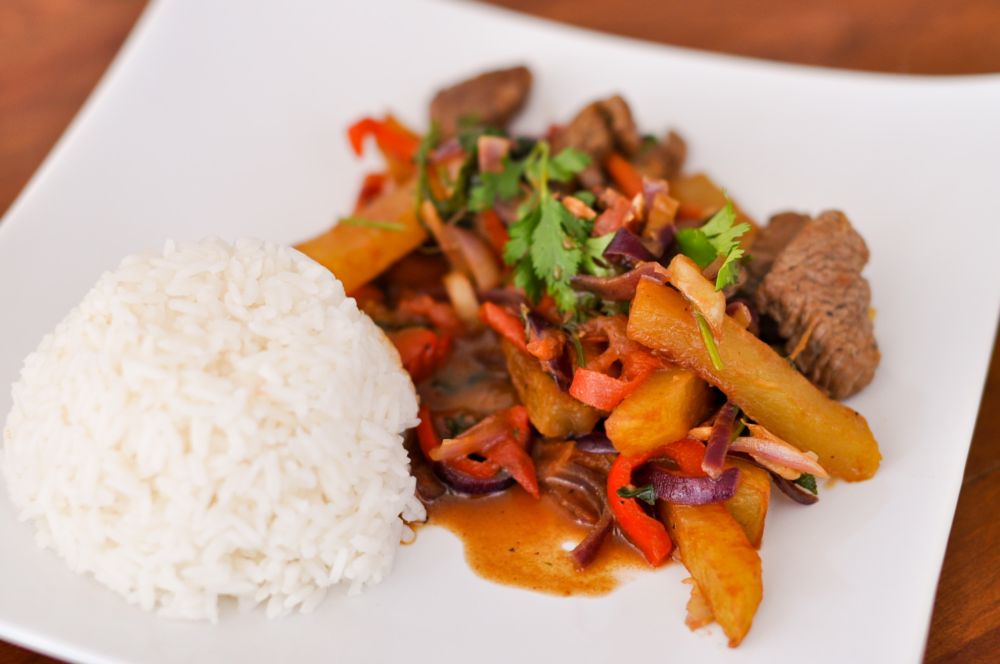

Cultural Background

Peru is a beautiful country in South America with a rich and diverse cultural history. Peru is home to famous historical sites such as Machu Picchu and the Nazca Lines. Peruvian culture is heavily influenced by indigenous civilizations such as the Inca Empire and Spanish colonialism. Quechua is one of the many languages that is spoken in Peru today. Quechua was the language spoken during the Incan Empire, and today, Spanish is predominantly spoken due to Spanish colonialism.

Other Spanish influences are seen in the architecture and artistic styles of homes and cathedrals in the capital cities of Lima and Cusco. Asian African and other European influences can also be seen in Peru's food and music. Because of this mixture of influences, dishes like ceviche and lomo saltado and music genres such as Huayno and Marinera were created.